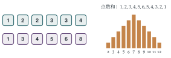

STEP I 1993，第 1 题
继续之前，请先阅读题目（原题为英文）。题目载于 STEP Support Programme 的题目资料库： step.maths.org/questions/93-s1-q1
引子
两颗六面骰子，各面标上正整数，除了平常的标法之外，还有没有别的标法，可以令由 \(2\) 到 \(12\) 的每个点数和出现的次数，都与普通骰子完全相同？1978 年，Martin Gardner 在《科学人》（Scientific American）杂志上宣布，这样的标法恰好只有一种：一颗骰子标上 \(1, 2, 2, 3, 3, 4\)，另一颗标上 \(1, 3, 4, 5, 6, 8\)。这对骰子由 George Sicherman 上校发现，现在市面上有售，称为Sicherman 骰子。用它们来玩一局大富翁（Monopoly），与用普通骰子玩根本无从分辨。
本题是一道热身题：从点数和的列表，推断两颗骰子各面标了甚么数字。要有系统地解决这个问题，以至证明 Sicherman 骰子是唯一的一对奇异骰子，方法都是把每颗骰子化为一个多项式（polynomial）。
动笔之前
假设第一颗骰子有 \(p_i\) 个面显示 \(i\)，第二颗有 \(q_j\) 个面显示 \(j\)，那么掷出点数和 \(t\) 共有多少种方法？
方法的数目是 \(\sum_i p_iq_{t-i}\)：先选定第一颗骰子的点数 \(i\)，第二颗就必须显示 \(t - i\)。就题目中的第一对骰子而言，点数和 \(6\) 可以来自 \(1 + 5\)（有 \(1 \times 1\) 种方法）、\(2 + 4\)（\(2 \times 1\) 种）、\(3 + 3\)（\(2 \times 2\) 种），此外再无其他可能，因为第一颗骰子没有 \(4\) 或 \(5\)，而第二颗没有 \(0\)。所以共有 \(1 + 2 + 4 = 7\) 种方法。■
逐步解题
阶段 1 两端的情况
把两颗骰子称为 \(A\) 和 \(B\)，并以 \(a_i\)、\(b_i\) 分别表示两颗骰子上显示 \(i\) 的面数。
点数和不可能是 \(2\)，也不可能是 \(12\)。这对 \(1\) 和 \(6\) 的分布有甚么启示？掷出 \(3\) 却确实有两种方法。哪一颗骰子上有 \(1\)？
掷不出点数和 \(2\)，即 \(a_1b_1 = 0\)：最多只有一颗骰子上有 \(1\)。点数和 \(3\) 只可能是 \(1 + 2\) 或 \(2 + 1\)，而且有两种方法，所以其中一颗骰子确实有 \(1\)；把它称为 \(A\)，于是 \(b_1 = 0\)。那么 \[\text{点数和 } 3: \quad a_1b_2 = 2, \qquad\text{所以 } (a_1, b_2) = (2, 1) \text{ 或 } (1, 2).\] 同理，掷不出点数和 \(12\)，即 \(a_6b_6 = 0\)。
阶段 2 逐步向上推
写出点数和为 \(4\) 的方程，记住 \(b_1 = 0\)。在两种情况下，这个方程分别说明了甚么？
点数和 \(4\) 是 \(1 + 3\) 或 \(2 + 2\)（由于 \(b_1 = 0\)，\(3 + 1\) 不可能出现），所以 \(a_1b_3 + a_2b_2 = 1\)。
情况 (a)，\(a_1 = 2\)，\(b_2 = 1\)：\(2b_3 + a_2 = 1\)，所以 \(b_3 = 0\) 及 \(a_2 = 1\)。
情况 (b)，\(a_1 = 1\)，\(b_2 = 2\)：\(b_3 + 2a_2 = 1\)，所以 \(a_2 = 0\) 及 \(b_3 = 1\)。
点数和 \(5\)：\(a_1b_4 + a_2b_3 + a_3b_2 = 1\)。
情况 (a)：\(2b_4 + 0 + a_3 = 1\)，所以 \(b_4 = 0\)，\(a_3 = 1\)。至此 \(A\) 有 \(1, 1, 2, 3\)，\(B\) 有 \(2\)；\(B\) 其余五个面都是 \(5\) 或 \(6\)。
情况 (b)：\(b_4 + 0 + 2a_3 = 1\)，所以 \(a_3 = 0\)，\(b_4 = 1\)。至此 \(A\) 有 \(1\)，\(B\) 有 \(2, 2, 3, 4\)；\(A\) 其余五个面取自 \(4, 5, 6\)，\(B\) 其余两个面取自 \(5, 6\)。
阶段 3 情况 (a) 不成立
在情况 (a) 中，写出点数和为 \(7\) 的方程，并利用 \(b_5 + b_6 = 5\)。
点数和 \(7\)：\(a_1b_6 + a_2b_5 + a_3b_4 + a_4b_3 + a_5b_2 = 2b_6 + b_5 + 0 + 0 + a_5 = 3\)。代入 \(b_6 = 5 - b_5\)，得 \(10 - b_5 + a_5 = 3\)，所以 \(b_5 = 7 + a_5 \geq 7\)。但 \(B\) 只有六个面。情况 (a) 不可能成立。
阶段 4 情况 (b) 成立
在情况 (b) 中，利用点数和 \(6\) 和 \(11\)，以及 \(a_6b_6 = 0\) 这个事实。
点数和 \(6\)：\(a_1b_5 + a_4b_2 = b_5 + 2a_4 = 4\)（其余各个乘积都含有 \(a_2 = a_3 = 0\) 或 \(b_1 = 0\)）。由于 \(b_5 \leq 2\)，而且 \(b_5 = 4 - 2a_4\) 是偶数，所以要么 \(b_5 = 0, a_4 = 2\)，要么 \(b_5 = 2, a_4 = 1\)。
若 \(b_5 = 0\)，则 \(B\) 是 \(2, 2, 3, 4, 6, 6\)，于是 \(a_6 = 0\)，而 \(A\) 是 \(1, 4, 4, 5, 5, 5\)。但这样点数和 \(7\) 就有 \(a_1b_6 + a_4b_3 + a_5b_2 = 2 + 2 + 6 = 10\) 种方法，而不是 \(3\) 种。
若 \(b_5 = 2\)，则 \(B\) 是 \(2, 2, 3, 4, 5, 5\)，其中 \(b_6 = 0\)，而 \(A\) 是 \(1, 4\) 再加上四个取自 \(5\) 和 \(6\) 的面。点数和 \(11\)：\(a_6b_5 = 2a_6 = 6\)，所以 \(a_6 = 3\) 及 \(a_5 = 1\)。
唯一的可能是 \[A:\ 1, 4, 5, 6, 6, 6, \qquad B:\ 2, 2, 3, 4, 5, 5.\] 最后，我们必须验证这对骰子确实给出整个列表，因为我们只用了其中一部分点数和。把乘积展开（或利用下文的多项式），即可确认每一项都吻合。■
回顾
从两端入手。最小和最大的点数和只牵涉一两个乘积，所以提供的信息最有力。
分情况讨论，逐一排除。每个点数和都把可能性收窄一些，直到只剩下一种情况。
检查充分性（sufficiency）。推论说明了骰子必须是甚么样子；最后的验证则说明这对骰子确实可行。
背后的数学
把骰子看成多项式
把每颗骰子写成一个多项式：每个显示 \(i\) 的面对应一项 \(x^i\)。普通骰子是 \(x + x^2 + x^3 + x^4 + x^5 + x^6\)，而题目中的两颗骰子是 \[A(x) = x + x^4 + x^5 + 3x^6, \qquad B(x) = 2x^2 + x^3 + x^4 + 2x^5.\] 相乘时，每一对面贡献 \(x^ix^j = x^{i+j}\)，所以 \(A(x)B(x)\) 中 \(x^t\) 的系数（coefficient），就是掷出点数和 \(t\) 的方法数目。这又是 第 9.4 节 中母函数（generating function）的想法：点数和的列表其实就是乘积 \(A(x)B(x)\)，而我们逐个情况的推论，正是把它因式分解（factorise）的一种方法。
Sicherman 骰子
两颗普通骰子的乘积是 \((x + x^2 + \cdots + x^6)^2\)。任何一对点数和分布相同的骰子，其多项式 \(P(x)\)、\(Q(x)\) 必须满足 \(P(x)Q(x) = (x + \cdots + x^6)^2\)。现在作因式分解： \[x + x^2 + \cdots + x^6 = x(1 + x)(1 + x + x^2)(1 - x + x^2),\] 而这些因式不能再进一步分解（成为整数系数的多项式）。所以 \(P\) 和 \(Q\) 都必须由因式 \(x\)、\(1 + x\)、\(1 + x + x^2\)、\(1 - x + x^2\) 组成，而每个因式合共出现两次。以下三个条件把选择收窄：
每颗骰子有 \(6\) 个面，所以 \(P(1) = Q(1) = 6\)；各因式在 \(x = 1\) 时的值分别是 \(1\)、\(2\)、\(3\)、\(1\)，所以每颗骰子各得一个 \(1 + x\) 和一个 \(1 + x + x^2\)；
没有任何面显示 \(0\)，所以 \(P(0) = Q(0) = 0\)：每颗骰子各得一个因式 \(x\)；
余下唯一的自由，是两个 \(1 - x + x^2\) 如何分配。每颗各得一个，就是普通骰子。两个都归同一颗骰子，则得 \[\begin{aligned} x(1 + x)(1 + x + x^2) &= x + 2x^2 + 2x^3 + x^4, \\ x(1 + x)(1 + x + x^2)(1 - x + x^2)^2 &= x + x^3 + x^4 + x^5 + x^6 + x^8. \end{aligned}\]
这就是 Sicherman 骰子，\(1, 2, 2, 3, 3, 4\) 和 \(1, 3, 4, 5, 6, 8\)（图 9.6.1），而以上论证亦证明了它们是唯一的另一种可能。关键在于：多项式与整数一样，可以唯一地分解为不可约（irreducible）因式的乘积——数论与组合数学（combinatorics）在此相遇。

在概率论中，同一个想法以概率母函数（probability generating function）的形式出现：取值 \(0, 1, 2, \ldots\) 的随机变量（random variable）\(X\) 有 \(\mathrm{G}(t) = \mathrm{E}(t^X) = \sum \mathrm{P}(X = k)t^k\)，而对于独立（independent）的 \(X\) 和 \(Y\)，\(\mathrm{E}(t^{X+Y}) = \mathrm{E}(t^X)\mathrm{E}(t^Y)\)。独立随机变量之和，对应于母函数之积。STEP III 2003 Q14（见练习）就是用这个方法找出 Sicherman 骰子，而 第 9.13 节 则用一个相关的论证，说明无论怎样在两颗骰子上做手脚，都不能令所有点数和出现的机会均等。
思维技巧
当物件以数值相加的方式组合时，把每个物件表示成 \(x\) 的多项式。组合变成相乘，而有关组合的问题就变成有关因式分解的问题。
在这里，一个关于骰子的问题化成了多项式的唯一分解（unique factorisation）。在大学里，这类编码随处可见：在组合数学中，在概率论中，也在代数中——在代数里，多项式本身就是研究对象，它们构成一个环（ring），其算术与整数的算术相似。
延伸练习
四面体骰子。试做 STEP III 2003，第 14 题，该题就四面骰子提出 Sicherman 的问题。（提示：\(x + x^2 + x^3 + x^4 = x(1 + x)(1 + x^2)\)。）
验证列表。展开 \((x + x^4 + x^5 + 3x^6)(2x^2 + x^3 + x^4 + 2x^5)\)，并与题目中的列表对照。
三颗骰子。是否存在三颗六面骰子，各面标上正整数，不全是标准骰子，而其点数和的分布与三颗标准骰子相同？（提示：\((x + \cdots + x^6)^3\) 的因式现在包括三个 \(1 - x + x^2\)。）
一枚硬币与一个八面体。一颗标上 \(1, \ldots, 8\) 的八面骰子，和一颗标上 \(1, 2\) 的两面“骰子”（即一枚硬币）：能否用另一种方式重新标号，而点数和的分布保持不变？
延伸阅读
Martin Gardner, Penrose Tiles to Trapdoor Ciphers（Mathematical Association of America）。收录了关于 Sicherman 骰子的那篇专栏文章。
Joseph Gallian & David Rusin, “Cyclotomic polynomials and nonstandard dice”, Discrete Mathematics 27 (1979)。一般理论，适用于任意面数的骰子。
Herbert Wilf, generatingfunctionology（可于网上免费阅览），第 1 章。